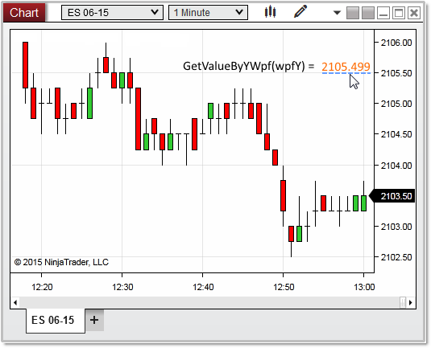

|
<< Click to Display Table of Contents >> GetValueByYWpf() |


|
GetValueByYWpf()
|
<< Click to Display Table of Contents >> GetValueByYWpf() |
|
Returns the series value on the chart scale determined by a WPF coordinate on the chart.
A double value representing a series value on the chart scale. This is normally a price value, but can represent indicator plot values as well.
y |
A double value representing a WPF coordinate on the chart scale |
protected override void OnRender(ChartControl chartControl, ChartScale chartScale) |
In the image below, we used the Chart Control property MouseDownPoint as the "wpfy" variable, which in return tells us the user clicked on a Y value of 2105.499 on the chart scale.
